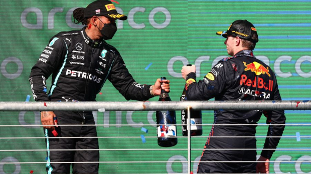

Gelijkspelletje
Wat gebeurt er als Verstappen en Hamilton volgende week met een gelijke stand eindigen?
22 reacties
Max Verstappen en Lewis Hamilton beginnen met een gelijke stand aan de Grand Prix van Abu Dhabi volgende week. Wat gebeurt er als beide titelkandidaten buiten de punten eindigen? Wel leggen het uit.
Hamilton kwam in Saoedi-Arabië na een bizarre race als eerste over de streep én legde beslag op de snelste raceronde. Verstappen kwam als tweede binnen. Daarmee heeft de zevenvoudig wereldkampioen zijn achterstand van acht punten precies weggepoetst. Op zondag 12 december gaat het duo nog één keer het gevecht met elkaar aan. Dit doen ze beiden met 369,5 punten achter hun naam. De race op het Yas Marina Circuit wordt dus allesbepalend.
Gelijke stand in het kampioenschap
Wat als de twee titelkandidaten na het vallen van de vlag een gelijk aantal punten hebben zoals nu het geval is? Hoe wordt dan beslist wie er wordt gekroond tot wereldkampioen? Het antwoord is vrij simpel. Bij een gelijke stand in het kampioenschap - ook tijdens het seizoen - wordt er gekeken naar de behaalde resultaten. Als eerst: wie heeft de meeste overwinningen behaald? Is dat ook gelijk, kijkt men naar het aantal tweede plaatsen. Geeft dat nog geen doorslag, telt het aantal derde plaatsen. Ook nog geen winnaar? Door naar de vierde plek. En zo gaat het door tot er een winnaar uit de bus komt.
Verleden
In 2007 eindigden - destijds McLaren-teammaten - Hamilton en Fernando Alonso bijvoorbeeld allebei op 109 punten in het wereldkampioenschap. Beiden wonnen ze dat seizoen vier races, maar Hamilton kwam vaker als tweede over de streep. Zodoende eindigde hij op de tweede stek, terwijl Alonso het moest doen met de derde plaats. De laatste keer dat een kampioenschap mogelijk met een gelijke stand zou eindigen, was in 2016. Toen begon Mercedes-coureur Nico Rosberg met 367 aan de laatste race, terwijl teammaat Hamilton op 355 punten stond.
Verstappen x Hamilton
Met nog één race te gaan is het interessant om de behaalde resultaten van Verstappen en Hamilton dit seizoen te bekijken. We gaan er vanuit dat de coureurs de finish halen: maar voor wie het toch graag wil weten, volgt hieronder een overzichtje. Verstappen staat op één overwinning meer.
Aantal overwinningen
Verstappen: negen Hamilton: acht
Aantal tweede plaatsen
Verstappen: acht Hamilton: zeven
Aantal derde plaatsen
Verstappen: geen Hamilton: één
Wat vinden jullie?